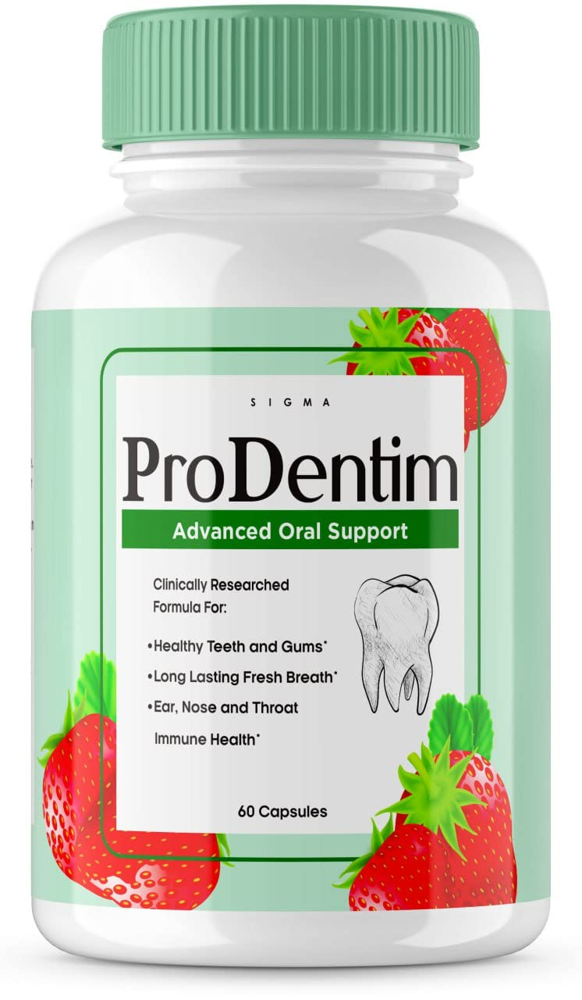

An honest, clinical breakdown of why conventional toothpastes fail, the Springer Nature microbiome discovery, and how repopulating your mouth with beneficial flora stops gum bleeding from the root.
If you brush your teeth twice a day, floss diligently, and rinse with expensive mouthwash—yet still see pink in the sink, experience painful tooth sensitivity, or worry about stubborn bad breath—you are not alone.
For millions of adults over 40, oral care has become a cycle of private anxiety. You dread every dental appointment, terrified that the hygienist will announce deeper 4mm and 5mm gum pockets, recommend painful deep root scaling, or warn you that teeth are beginning to loosen.
Here is the truth modern dentistry rarely discusses: conventional oral care has been looking at gum disease and tooth decay completely backwards.

Consider this biological paradox: human teeth can survive for thousands of years in archeological fossils buried deep underground. Yet inside our own warm mouths, teeth can decay, erode, and loosen within decades from simple foods. Why?
Because outside the mouth, teeth aren't subjected to chemical detergents. But inside our mouths, modern commercial toothpastes—packed with Sodium Lauryl Sulfate (SLS), triclosan, and alcohol—act like a bleach bomb on your oral microbiome. By wiping out all bacteria indiscriminately, you leave your gums completely defenseless against hostile, aggressive pathogens.
In a landmark study published in the prestigious medical journal Springer Nature, scientists discovered something that shocked the dental establishment:
Just like your digestive gut, your mouth depends on a delicate ecosystem of trillions of microorganisms. When you have enough protective bacteria:
Many people ask: "Can't I just take a regular gut probiotic capsule?"
The answer is no. Standard probiotic capsules are coated in gelatin to survive stomach acid and reach your intestinal tract. They never touch your teeth, gums, or saliva.
ProDentim is fundamentally different. It comes in a pleasant, natural peppermint soft chewable tablet. As you slowly chew or dissolve it each morning, 3.5 billion CFU of live, beneficial bacteria directly coat your gum line, tongue, and dental crevices—instantly repopulating your natural oral defenses.
Beneficial probiotic strains colonize the gum pockets, depriving destructive bacteria of food and neutralizing foul sulfur odors at the cellular source.
Tricalcium phosphate delivers bioavailable minerals directly to microscopic enamel pores, while strawberry malic acid stimulates natural saliva cleansing.
ProDentim combines 3 clinically researched probiotic strains with 4 targeted oral botanicals:
Clinically shown to support gum tissue integrity, inhibit plaque adhesion, and keep nasal and sinus passages clear.
One of the world's most researched strains; maintains oral flora balance and supports upper respiratory immunity.
Calms tender, red, bleeding gums and reduces oral inflammation while eliminating chronic bad-breath compounds.
Feeds and nourishes the 3.5 billion friendly bacteria so they thrive and form permanent colonies in your mouth.
A natural fruit acid that stimulates salivary flow and gently dissolves surface stains to restore natural brightness.
Supplies direct calcium and phosphorus for enamel remineralization, while peppermint provides lasting, crisp freshness.
If you are tired of watching your gums slowly recede, dreading the dentist's drill, suffering from chronic bad breath, or living in fear of $5,000 dental surgery—ProDentim addresses the true biological root of the problem.
Brushing and flossing clean the surface. But without a thriving colony of 3.5 billion good bacteria, your teeth are constantly fighting an uphill battle against aggressive pathogens. Chewing one soft dissolvable tablet each morning is the simplest, most sensible 10-second habit you can adopt for your smile.
The manufacturer provides tiered discounts for long-term oral repopulation (most readers choose the 3 or 6-bottle supply for lasting results):
🎁 Free Bonuses with 6-Bottle Orders: Bad Breath Gone: One Day Detox, Hollywood White Teeth at Home, and the At-Home Oral Reset Guide.
Official manufacturer inventory is protected by a 100% risk-free 60-Day Money-Back Guarantee. Click the official link below to verify stock and activate your 78% reader discount:
👉 CLICK HERE TO ACTIVATE YOUR 78% DISCOUNT AT PRODENTIM101.COM →